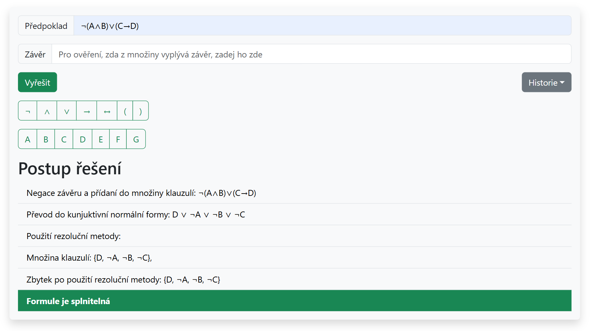

Application for automated theorem proving
An educational app designed to help students better understand and practice the resolution method in propositional logic.
Flask MySQL React
I’ve primarily worked on backend development in Python, but I’m currently expanding into frontend with JavaScript and React to build full-stack skills. I spent a year developing software for different kinds of projects in a company setting, and also currently finishing a game built with Godot.
My studies gave me knowledge in system administration, computer networks, virtualization, and database management. I gained hands-on experience with technologies across different layers of software systems — from managing servers and configuring networks to designing database schemas and improving performance. I’ve also worked with programming languages like C++ and Java, which helped me develop structured thinking and learn the basics of object-oriented design. These experiences shaped the way I approach software architecture and problem-solving in more complex projects.
Implemented software for station information displays and system integration across various communication protocols. Developed interfaces for hardware sensors and I/O modules to ensure reliable operation of connected devices.
Developed a card-based game in Godot Engine combining space exploration, survival, and strategy. Designed gameplay systems for ship building, combat, and planetary colonization, focusing on balance and player progression.
Bachelor's thesis: Educational application for automated theorem proving in propositional logic
ongoing
An educational app designed to help students better understand and practice the resolution method in propositional logic.
Space exploration card game, made with Godot.
GitHub · release soon
A web app for managing and storing data on chemical substances in hospitals.
GitHub · in progress
Prefers communication via e-mail, responds within 24 hours.